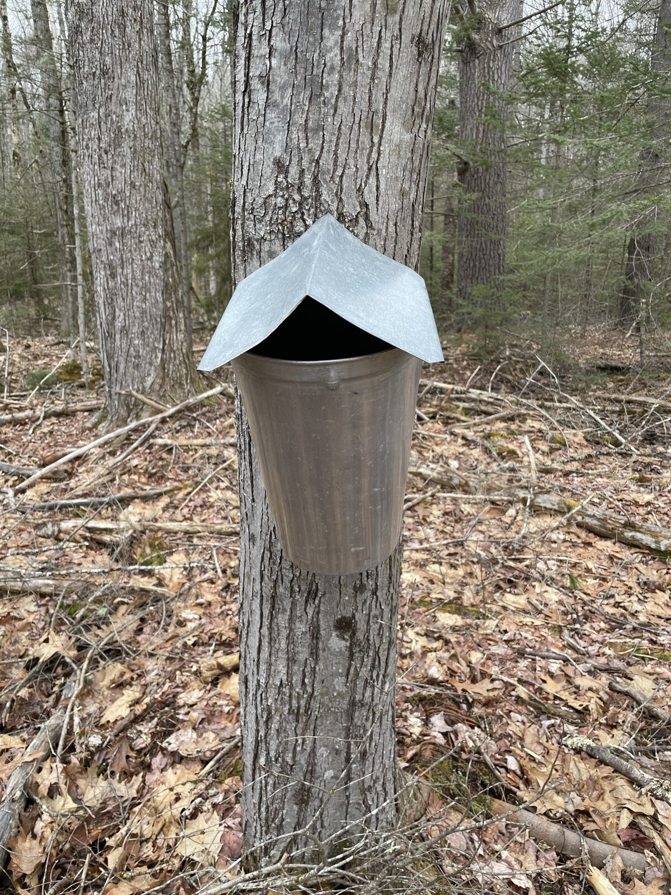

01
Maple Syrup
MapleLast year we tapped two maple trees in an attempt to make our own maple syrup for the first time.
Drill hole in tree and hang bucket under --> filter --> boil/reduce --> Maple syrup
will have to find pictures of the tiny mason jar of syrup we ended up with..it was delicious.
